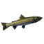
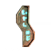
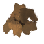

Peixes e diversos
Peixes e diversos em Valheim – 33 itens com bioma, origem, ferramenta necessária, receita e utilização.
Nenhum item encontrado.
 Arenque gigante
Arenque gigante
Fermentado, este peixe terá um cheiro pior do que o do pântano de onde veio.
Como obter
- Pesca: Pântano · Isco: Isca de pesca fedida
Utilização
- Ingrediente para: Chapéu de pescador, Peixe cru
 Aros de barril
Aros de barril
Estas argolas de metal são perfeitamente redondas e servem para sustentar um barril. Basta adicionar madeira!
Como obter
- Comprar: Haldor · 100 moedas (× 3)
Utilização
- Material de construção para: Barril
 Atum
Atum
Galinha do mar...
Como obter
- Pesca: Oceano · Isco: Isca de peixe pesada
Utilização
- Ingrediente para: Chapéu de pescador, Peixe cru
 Baiacu
Baiacu
Saboroso quando bem cozido, mas tem um sabor um pouco picante.
Como obter
- Pesca: Terras nubladas, Oceano · Isco: Isca de pesca nebulosa
Utilização
- Ingrediente para: Chapéu de pescador, Peixe cru
 Baú de latão da Hildir
Baú de latão da Hildir
Propriedade de Hildir. Favor devolver se encontrado.
Como obter
- Largado por: Brenna · Floresta negra
 Baú de prata da Hildir
Baú de prata da Hildir
Propriedade de Hildir. Favor devolver se encontrado.
Como obter
- Largado por: Geirrhafa · Montanha
 Cabo de foice
Cabo de foice
Uma base sólida para uma ferramenta.
Como obter
- Comprar: A Bruxa do Pântano · 200 moedas · depois de derrotar Moder
Utilização
- Ingrediente para: Foice
 Chave da cripta
Chave da cripta
Parcialmente coberta de lama endurecida, tem um cheiro fétido.
Como obter
- Largado por: O Ancião · Floresta negra
 Chave intrincada
Chave intrincada
Se há uma chave, então certamente deve haver uma fechadura.
Como obter
- Largado por: Hexen · Prado, Floresta negra, Pântano, Montanha, Planície, Terras nubladas, Terras Cinzentas, Norte profundo, Oceano · 10 % de probabilidade
- Cozinhar: Fundição gélida a partir de
 Peça fundida: Chave intrincada
Peça fundida: Chave intrincada
 Espírito dilacerado
Espírito dilacerado
Os restos de Yagluth, um espírito retorcido e dilacerado entre este mundo e o próximo.
Como obter
- Largado por: Yagluth · Planície · 3 ×
Utilização
- Material de construção para: Fonte de wisps
 Farinha de aveia
Farinha de aveia
Aveia moída fina, com muito potencial.
Como obter
- Processar: Moinho a partir de
 Aveia
Aveia
Utilização
- Ingrediente para: Batáter crua, Café da manhã do norte, Massa de panqueca de forno, Panquecas, Pão com carne
 Farinha de cevada
Farinha de cevada
Ótimo para fazer pão.
Como obter
- Processar: Moinho a partir de
 Cevada
Cevada
Utilização
- Ingrediente para: Massa de pão, Morcela, Pão doce cru, Torta de crosta assada crua, Torta de Lox crua, Torta picante crua, Wraps de peixe
 Garoupa
Garoupa
Melhor servido com muitos carboidratos!
Como obter
- Pesca: Planície · Isco: Isca de peixe picante
Utilização
- Ingrediente para: Base de hidromel: repelente de mortesquito, Chapéu de pescador, Peixe cru
 Garoupa estrelada
Garoupa estrelada
Já viu algumas coisas... Algumas muito assombrosas...
Como obter
- Pesca: Oceano · Isco: Isca de peixe pesada
Utilização
- Ingrediente para: Chapéu de pescador, Peixe cru
 Kit de barbearia
Kit de barbearia
Um kit ideal para os melhores barbeiros.
Como obter
- Comprar: Hildir · 600 moedas
Utilização
- Material de construção para: Barbearia
 Lágrima de dragão
Lágrima de dragão
As últimas lágrimas congeladas de um dragão, pulsando com energia misteriosa.
Como obter
- Largado por: Moder · Montanha · 10 ×
Utilização
- Material de construção para: Mesa de artesanato

LúcioUm peixe de água doce que precisa de muito tempero.
Como obter
- Pesca: Prado, Floresta negra, Planície · Isco: Isco de pesca
Utilização
- Ingrediente para: Chapéu de pescador, Peixe cru
 Ovo
Ovo
Mantenha-o quente para ver o que sai..., mas quem veio primeiro, na real?
Como obter
- Comprar: Haldor · 1.500 moedas · depois de derrotar Yagluth
- Baús: Missão de Hildir: Torre selada · 55 % de probabilidade
Utilização
- Ingrediente para: Omelete de cogumelos, Ovo cozido, Panquecas, Pão doce cru
 Ovo de Dragão
Ovo de Dragão
Muito mais pesado do que parece, projeta um murmúrio fraco.
Como obter
- Apanhar: Ninho de dragão (ovo)
 Ovo de uruvul
Ovo de uruvul
Quente ao toque e cheio de proteínas.
Como obter
- Largado por: Uruvul · Terras Cinzentas · 1–2 × · 50 % de probabilidade
- Apanhar: Ninho de abutre
Utilização
- Ingrediente para: Torta de crosta assada crua
 Peixe magma
Peixe magma
Alguns dizem que este peixe põe seus ovos diretamente em lava derretida!
Como obter
- Pesca: Terras Cinzentas · Isco: Isca de pesca quente
Utilização
- Ingrediente para: Chapéu de pescador, Peixe cru
 Peixe Troll
Peixe Troll
Este peixe é um incômodo para os riachos locais.
Como obter
- Pesca: Floresta negra · Isco: Isca de pesca musgosa
Utilização
- Ingrediente para: Base de hidromel: força de troll, Chapéu de pescador, Peixe cru
 Peixe-pescador
Peixe-pescador
A luz suspensa facilita ver essa carinha linda!
Como obter
- Pesca: Terras nubladas · Isco: Isca de pesca nebulosa
Utilização
- Ingrediente para: Chapéu de pescador, Peixe cru, Peixe cru e pão
 Perca
Perca
Um peixe saboroso de carne branca.
Como obter
- Pesca: Prado, Floresta negra, Planície · Isco: Isco de pesca
Utilização
- Ingrediente para: Base de hidromel: Vananidir, Chapéu de pescador, Peixe cru

Quebra-selosUm objeto usado para quebrar um selo de anões dverger.
Como obter
- Fabricar: Mesa de encantamentos Galdr a partir de 9 ×
 Fragmento de quebra-selos
Fragmento de quebra-selos
 Salmão do norte
Salmão do norte
Este peixe gosta que a água esteja quase congelada.
Como obter
- Pesca: Norte profundo · Isco: Isca de pesca congelada
Utilização
- Ingrediente para: Chapéu de pescador, Peixe cru
 Sela de alce
Sela de alce
O alce é uma criatura nobre, mas com uma sela tão magnífica, talvez permita ser montado.
Como obter
- Fabricar: Forja preta (nível 2) a partir de 4 ×
 Ourossangue, 5 ×
Ourossangue, 5 ×  Couro de foca, 5 ×
Couro de foca, 5 ×  Madeira Nórdica, 15 ×
Madeira Nórdica, 15 ×  Fio de linho
Fio de linho
 Sela de asksvin
Sela de asksvin
As costas de um asksvin são bastante rugosas, então você precisará de uma sela se quiser montar.
Como obter
- Fabricar: Forja preta (nível 2) a partir de 6 ×
 Lumetal, 20 × Fio de linho, 4 ×
Lumetal, 20 × Fio de linho, 4 ×  Tendão de Morgen
Tendão de Morgen
 Sela de Lox
Sela de Lox
Use em um Lox para usá-lo como montaria.
Como obter
- Fabricar: Bancada de trabalho a partir de 10 ×

Farrapos de couro, 20 ×Fio de linho, 15 ×  Metal preto
Metal preto
 Semente antiga
Semente antiga
Encosta-a ao teu ouvido, ouvirás minúsculos sussurros do seu interior...
Como obter
- Largado por: Anão Cinzento bruto · Floresta negra · 33 % de probabilidade
- Destruir: Ninho de anões cinzentos
Utilização
- Ingrediente para: Coração da floresta
- Invoca o boss: O Ancião (3 ×)
 Sino
Sino
Por quem os sinos tocam?
Como obter
- Fabricar: Forja preta a partir de 3 ×
 Fragmento de sino
Fragmento de sino
Utilização
- Invoca o boss: Fader (3 ×)
 Tetra
Tetra
Passou a sua vida inteira na escuridão, não precisa de olhos.
Como obter
- Pesca: Montanha · Missão de Hildir: Caverna uivante, Gruta de gelo · Isco: Isca de pesca fria
Utilização
- Ingrediente para: Chapéu de pescador, Peixe cru
 Totem Fuling
Totem Fuling
Canaliza o antigo poder de Yagluth.
Como obter
- Largado por: Fuling furioso · Planície · 10 % de probabilidade
- Baús: Stonehenge · 8,1 % de probabilidade
- Apanhar: Torre de pedra (Montanhas), Aldeia fuling
Utilização
- Invoca o boss: Yagluth (3 ×)